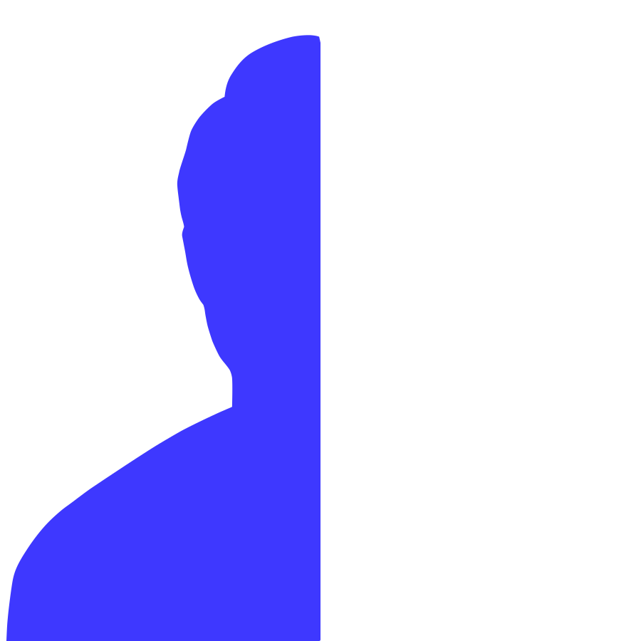
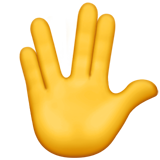
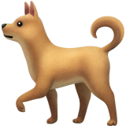

Kirk here.
UX & Product Designer.
I groove with teams to create engaging and valuable opportunities within products.
I groove with teams to create engaging and valuable opportunities within products.
I groove with teams to create engaging and valuable opportunities within products.
Over the past 3+ years, I’ve focused my work and studies on connecting user-centered design practices with an engineering and business mindset.
From research and ideation with design teams to strategizing and testing with marketing/engineering teams, getting involved in the whole process is what I live for.
I love bringing together different perspectives to create solutions — solutions that enable users to create their own experiences.
I’m a graduate from the University of Washington with a degree in Human Centered Design & Engineering. Currently, I am looking for full-time opportunities and recommendations for dog-proof sandals.
While the design process can vary between projects, I believe every stage of the process has 3 consistent components.
Research gives context and validation to every step of the design process. As a product designer, this means asking the right questions to create a foundational understanding of the user goals and project vision. I use this approach to strengthen each of my design decisions with supporting evidence.
Design & Development goes beyond building the product’s visuals and functionality. I use my tools to conceptualize not only the way something looks and feels, but also the steps necessary to produce it. Each step involves a balance of creative and practical thinking to explore new possibilities while maintaining the scope of the project.
Communication is important for articulating ideas as well as expressing them visually. This requires empathy for multiple audiences at any time. Not only should my designs communicate their intention to the user, but I must also consider the many other stakeholders affected by my work.